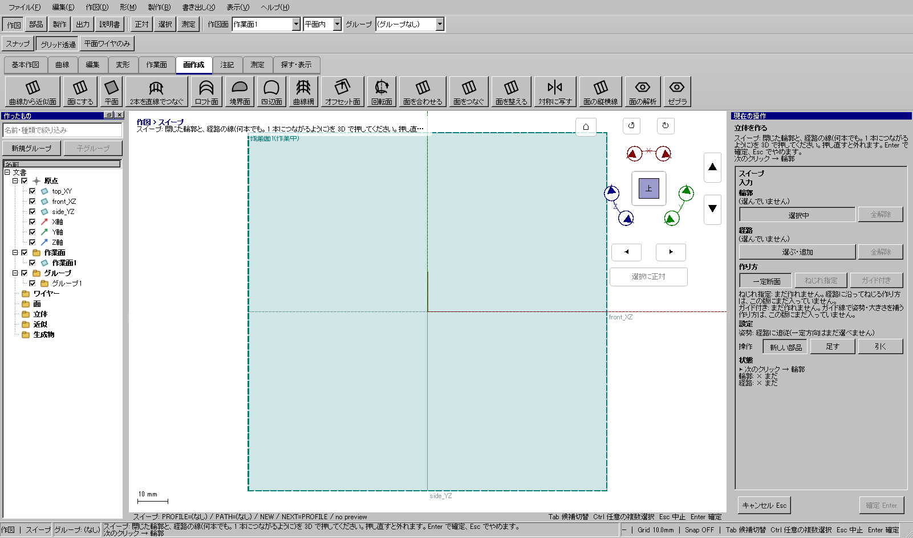
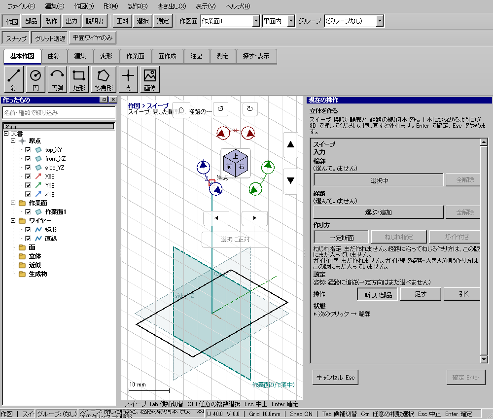

線路形の経路に沿う棒を作る
使う機能：スイープ
断面を経路に沿って運び、棒状の部品を作ります。断面と経路の役割を逆にせず、まず直線経路で確認してから曲線へ進みます。
経路に沿った円断面の立体ができる。
1 準備 — 元の図形から作る
半径1mmの円と、その平面に垂直に始まる経路を作る。
まだ用意できていなければ、次の手順を先に行ってください。既にモデルがある場合も、例の座標・大きさ・面の向きを自分のモデルへ読み替えます。
- 指定座標の直線・円・円弧を準備する — 図形の作成から順に練習できます。
- 線・面・部品を取り違えずに選ぶ — 図形の作成から順に練習できます。
練習前にKCD2を別名保存します。数値の長さはmm、角度は度です。平面内のu/vと世界XYZを区別します。
2 使う道具を開く — 押す場所
- 部品 → 作成 → スイープ
別の入口：Ctrl+K → スイープを検索 → 候補の用途を確認して開きます。別モードなら「全モードから探す」をオンにします。

3 操作手順 — 一つずつ進める
断面の円を作る
top_XYを作業面にして正対します。円の中心を0,0、半径を1mmにして作り、左一覧で「断面」と名前を付けます。
画面で確認：XY面上に直径2mmの閉じた円が1個あります。
経路を別に作る
線の「座標で作成」で3D直線を選び、0,0,0から0,0,10へ作ります。「経路」と名前を付けます。
画面で確認：経路は断面の中心から、断面に直角に10mm伸びています。
スイープを開く
先にVで作図を終了し、部品→作成→スイープを押します。
画面で確認：右の作り方がスイープになり、断面と経路の入力が別々にあります。
断面を登録する
断面の選択ボタンを押し、左一覧の「断面」を選びます。3Dで迷う場合は一覧を使います。
画面で確認：断面欄は円の名前です。経路の直線を断面へ入れません。
経路を登録する
経路の選択ボタンへ切り替えて「経路」の直線を選びます。
画面で確認：経路欄は3D直線です。他の役割へ入れた円は保持されます。
下見と確定
新規の結果を選び下見します。円がZ方向へ10mm運ばれることを見て確定します。
画面で確認：この直線例は半径1mm・高さ10mm、体積約31.416立方mmの円柱です。
曲線へ進む
まず直線例を保存します。そのコピーで経路を曲線へ変え、始点と断面の向き、曲がり半径を確認します。
画面で確認：急な曲がりで太い断面が自分に食い込む条件は、同じ方法で必ず成功するとは限りません。
4 設定する欄と数値
ボタン名・欄名と、今回使う値を対応させてください。項目が出ていない場合は作り方・モードが合っているか確認し、ペイン内をスクロールします。
| 見る欄・役割 | この例の設定と意味 |
|---|---|
| 断面 | R1の円 |
| 経路 | 円の平面に垂直な直線10mm |
| 確認体積 | 単純例なら約31.416mm³ |
選択の確認：役割欄の名前と3Dの強調を照合します。重なって拾いにくい時はTabで候補を替えます。全体を使う例では左一覧の要素名を選び、3Dの1辺選択と区別します。

この実画面は既存操作試験の一場面で、下の数値例の完成画像とは限りません。設定・選択の操作画面。具体的な完成例は段階写真のある作業例を参照してください。
5 確定して結果を確認
必要な入力と数値をそろえ、下見と状態欄を確認して、右ペインの作成・適用・確定ボタンを押します。Enter対応の道具はEnterでも確定できます。
経路に沿った円断面の立体ができる。
形を作る操作では、元と結果の名前を分けて一覧で確認し、必要に応じて元を一時非表示にします。表示だけの機能では形状や要素数を変えることが目的ではありません。
6 取消・やり直し・保存
Escで未確定の入力を取り消します。道具を終えるには選択（V）か別の道具へ切り替えます。確定済みの図面変更はCtrl+Z、やり直しはCtrl+Yです。
モデルの編集正本はKCD2、説明書の編集正本はKCIです。外部へ出力するだけの機能では、出力ファイルと編集元を両方残してください。
進めない場合 — 症状から戻る場所を探す
| 起きていること | 確認して直す場所 |
|---|---|
| 急な曲がりで失敗 | 半径と経路の曲がりを見直す |
| 断面が回る | 始点位置と断面姿勢を確認 |
この機能の入力条件：閉じた輪郭を1つ以上と、経路の線を選んでください。
計算中は処理表示を見ます。失敗が出たら、対象・入力条件を変えずに何度も押すのでなく、案内にある対象と条件を確認します。
参考画面の出典と確認範囲
試験名：HP-SO-02 スイープは輪郭と経路を押すとまっすぐな経路で面積×長さの立体になる。試験全体の結果：passed。画像はコマンド呼出し直後で、入力待ち・下見の場合もあります。各段階の完成証拠ではありません。